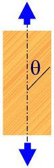
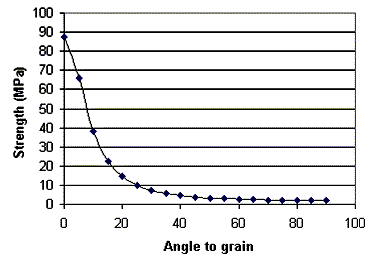
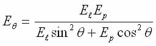

COPYRIGHT Tim Lovett © July 2004
..
Wood is orthotropic - the strength is predominantly along one axis. Parallel to the grain, tensile is very high (pulling it) and compressive strength good (a pier), but shear is low. Perpendicular to the grain the tensile is very low (splitting action) and compression moderate (denting a floorboard), but shear is high (shearing a dowel pin). There is another type of shear (rolling shear) which is low. Some of these properties are not normally measured because timber is rarely used in that situation today. For example, cross grain shear strength is so high compared to parallel shear that it can only occur if the timber was deliberately shear loaded (dowel pin). Since we hardly ever use timber as a structural fastener (apart from trivial furniture connections), cross grain shear is not normally measured.
For loads at a angle to the grain, the Hankinson formula gives the adjusted property values. Note that 45 degrees gives a value much less than midway between the two values.
|
Hankinson's Formula Consider a particular property such as strength or stiffness. Assuming the property measured along the grain (P) is different to the cross grain value (Q). Then, by Hankinson's formula, the value at an angle to the grain is given by |
 |
||||||||||||||||||||||
|
Example. Strength of Douglas Fir Parallel tensile strength = 87.6 MPa Perpendicular tensile strength = 2 MPa
|
 |
Similarly for elasticity, the MoE of wood perpendicular to grain is about 1/50 the value of MoE parallel to grain. Hankinson’s formula is: (Ref 1)

where
El MoE parallel to grain (as given in Table 7.1 of AS1720.1)
Ep MoE perpendicular to grain (estimated as 1/50 to 1/30 El )
Douglas Fir. Ultimate Properties (Failure)
| Species | Density pcf, | MOR or Ft(||) | MOE or E | Comp Parallel Fc (||) | Comp Perp Fc(_|_) | Shear Parallel Fs(||) | Shear Perp Fs(_|_) | Tension Perp Fp(_|_) | Tension Perp Tangent Fpt(_|_) | Tension Parallel Fp(||) |
|
Units |
12% MC |
psi |
k psi |
psi |
psi |
psi |
psi |
psi |
psi |
psi |
|
Douglas Fir |
34 (4)
|
12700 (4) 12400 (13) |
1950 (4) |
7430 (4) 7430 (9) 7230 (13) |
870 (4) 800 (4) |
1160 (4) 1130 (13) |
3190 (1) |
290 (7) 290 (8) |
340 (9) |
11000 (13) |
Douglas Fir. Coastal type. Allowable Properties (Working)
| Species | Density pcf, | MOR or Ft(||) | MOE or E | Comp Parallel Fc (||) | Comp Perp Fc(_|_) | Shear Parallel Fs(||) | Shear Perp Fs(_|_) | Tension Parallel Ft(||) | Tension Perp Ft(_|_) |
|
Units |
12% MC |
psi |
k psi |
psi |
psi |
psi |
psi |
psi |
psi |
|
Douglas Fir Coastal Type |
34 |
2000 (11) 1500 (12) |
|
1466 (11) 1150 (12) |
385 (11) 625 (12) |
150 (11) 85 (12) |
|
1. Perpendicular shear estimate (2.5 to 3 times parallel shear). Wood: Strength and Stiffness. p2. http://www.fpl.fs.fed.us/documnts/pdf2001/green01d.pdf
2. Hankinson's Formula (Elasticity) http://www.timber.org.au/NTEP/menu.asp?id=128
3. Hankinson's Formula (Stress) example http://www.dot.ca.gov/hq/esc/construction/Manuals/Falsework/Appendix_E.pdf
4. Wood: Strength and Stiffness. p2. http://www.fpl.fs.fed.us/documnts/pdf2001/green01d.pdf
5. Span tables Douglas Fir 1:360 deflection http://www.wwpa.org/techguide/spans.htm
6. Large round log connection using metal dowels (threaded) http://www.fpl.fs.fed.us/documnts/fplrp/fplrp586.pdf
7. Tensile strength perp to grain (Douglas Fir) http://scholar.lib.vt.edu/theses/available/etd-08132002-140200/unrestricted/AppendixF.pdf , http://www.rfyacht.com/yd/1524/dissertation/appendix/a5.htm
8. Properties of wood http://www.unb.ca/civil/thomas/22%20Properties%20of%20Wood.pdf
9. Wood
11: MCM 1 Ship Specifications, February 8, 1982 Section 100. (Source: http://www.maritime.org/conf/conf-davis.htm)
12: Allowable Stress, Douglas Fir Select Structural (Standard no. 17, Grading Rules for West Coast Lumber, Table 11). (Source: http://www.maritime.org/conf/conf-davis.htm)
13: Failure Stress. Wood Handbook: Wood as an Engineering Material, Forest Service, U.S. Dept. of Agriculture, Agricultural Handbook 72, 1987.
14. Free Structural Software. http://www.structural-engineering.fsnet.co.uk/free.htm
1. Formulas for Stress and Strain. 5th ed: Raymond J Roark Warren C Young McGraw Hill 1975. Ch 13.3 Miscellaneous Cases p 526.
2. Design of Wood Structures ASD (4th Edition): D.E. Breyer, K.J. Fridley, K.E. Cobeen: McGraw-Hill 1999 ISBN: 0-07007716-9 950 pages. Comprehensive treatment and plenty of examples. Incorporates the 1997 National Design Specifications for Wood Construction (NDS), and the 1997 Uniform Building Code (UBC). Also loading criteria and lateral forces (wind and earthquake) design.
3. APA Engineered Wood Handbook. T.G. Williamson (Editor), McGraw Hill 2002 ISBN 0-07-136029-8. Comprehensive coverage, emphasis on modern materials and developments. Good section on construction.
4. Mark's Standard Handbook for Mechanical Engineers. (10th Ed) Avalline, Baumeister. (Editors) McGraw Hill 1996